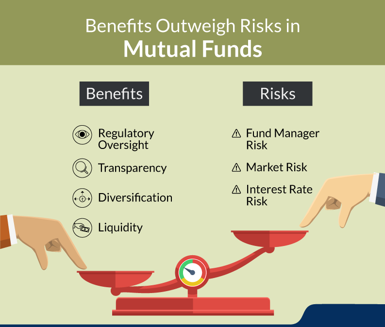

म्युच्युअल फंडमध्ये गुंतवणूक करणार्यांना कोणकोणत्या जोखमींचा सामना करावा लागतो?

म्युच्युअल फंड विविध प्रकारच्या सिक्युरिटीजमध्ये — समभाग, बाँड, कॉमोडिटीज, इतर बाजार आधारित साधने — गुंतवणूक
करतात. अशा गुंतवणुकींना बाजाराचे चढउतार, चलनवाढ, व्याजदर बदल, राजकीय घटना, आणि अन्य अनेक घटकांमुळे जोखमी
निर्माण होतात.
मुख्य जोखीम प्रकार
बाजार जोखीम (Market Risk): समग्र बाजारातील चढउतार—जसे की आर्थिक मंदी, उतार-चढाव, राजकीय
अस्थिरता—आपल्या गुंतवणुकीवर परिणाम करतात. ही प्रणालीगत (systematic) जोखीम असून, संपूर्ण बाजारावर परिणाम
करते.
व्याजदर जोखीम (Interest Rate Risk): बाँडवरील गुंतवणुकींची किंमत व्याजदरांबद्दल उलटनं
असते. व्याजदर वाढल्यास बाँडचे मूल्य कमी होते, ज्याचा प्रभाव debt funds च्या NAV वर होतो.
क्रेडिट जोखीम (Credit Risk): बाँड जारी करणारी संस्था (issuer) दिवाळखोरीसारख्या स्थितीत
पैसा फेडू शकत नाही, तर गुंतवणूकदाराला तोटा सहन करावा लागू शकतो.
महागाई जोखीम (Inflation Risk): काही fixed-income फंडांसारखी गुंतवणूक महागाईलाही हरवू
शकत नाही — त्यामुळे खरे उत्पन्न मिळत नाही किंवा तोटा होऊ शकतो.
द्रवता जोखीम (Liquidity Risk): काही सिक्युरिटीज सहज व्यवहारात येत नाहीत, ज्यामुळे
विक्री/खरेदी करताना नुकसान होऊ शकते. त्याचा परिणाम NAV आणि व्यवहार खर्चावर होतो.
संघनन जोखीम (Concentration Risk): एखाद्या एकाच क्षेत्र किंवा सेक्टरमध्ये मोठा गुंतवणूक
झाल्यास, त्या क्षेत्रातील वाईट घडामोडी संपूर्ण गुंतवणूक प्रभावित करतात.
राजकीय व नियम आधारित जोखीम (Political & Regulatory Risk): सरकारच्या धोरणातील बदल,
करधोरण, नियमविचार, IPO नियमाद्वारे गुंतवणूक प्रभावित होऊ शकते.
प्रबंधकीय व शैली विचलन (Management & Style Drift Risk): फंड मॅनेजरने सांगितल्या
शैलीपासून वळवले तर तुमच्या अपेक्षीत जोखमींमध्ये बदल होतो, परिणामी धोका वाढतो.
जोखीम कमी करण्याचा सर्वोत्तम मार्ग — **विविधीकृत गुंतवणूक** (Diversification) करणे: विविध साधने, वर्ग,
विभाग, किंवा भौगोलिक क्षेत्रात गुंतवणूक करून धोक्याचा सामना करू शकतो.
“Mutual Fund मध्ये गुंतवणूक करण्यापूर्वी जोखमींचे स्वरूप आणि त्यांचा तुमच्या उद्दिष्टांवर होणारा
परिणाम नीट समजून घेणं अत्यंत आवश्यक आहे.”
जोखीम कमी करण्यासाठी SIP सह नियोजन केलेली गुंतवणूक, सतत पुनरावलोकन, आणि योग्य वेळेला पुनर्संतुलन यांचा वापर
केला जाऊ शकतो. तुम्हाला मार्गदर्शन हवं असल्यास, मी मदतीसाठी येथे आहे.